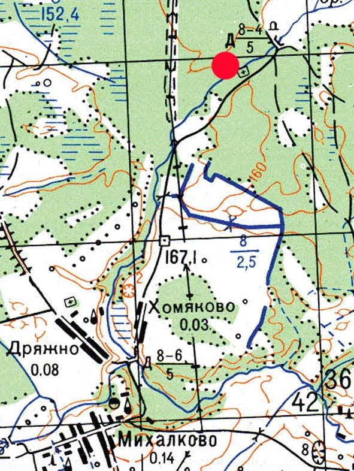
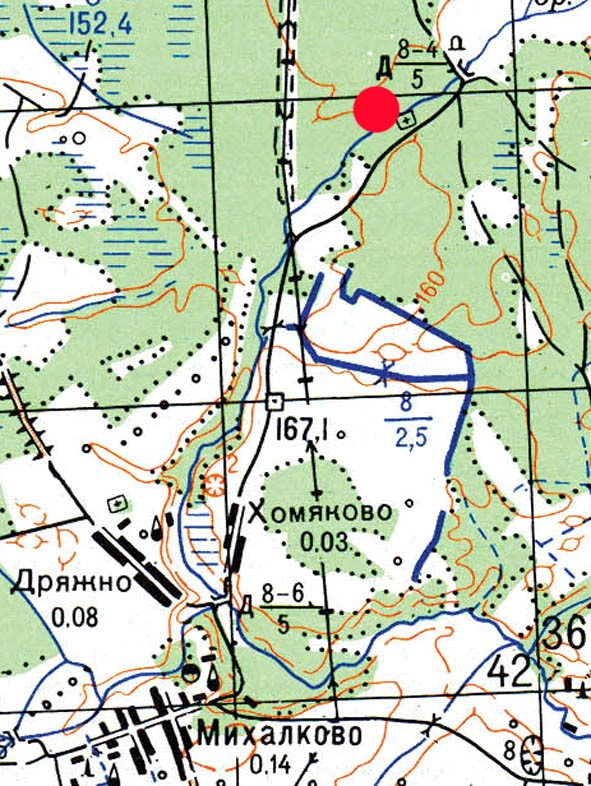
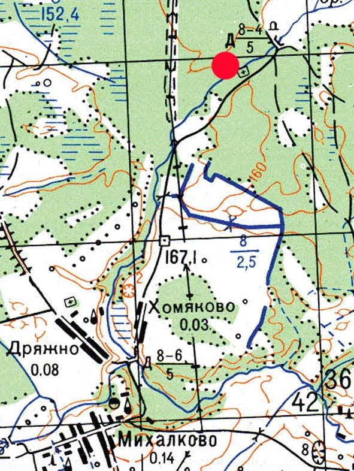

Информация № 63: Магілы ахвяра вайны
1. Месца і дата пахавання: Рэспубліка Беларусь, Віцебская вобл., Віцебскі раён, в. Хамякова, Курынскі с/с
2. Тып пахавання: індывідуальнае пахаванне
3. Памеры пахавання: Шырыня – 2 м, даўжыня – 3 м
4. Кароткае апісанне пахавання: каменны помнік
5. Колькасць пахаваных: 1
6. Персанальныя звесткі: Чарнышоў Іван Фёдаравіч
7. Дадатковая інфармацыя: Знаходзіцца на грамадзянскіх могілках в. Хамякова, у 4 км. на поўнач ад вёскі. На каменным помніку надпіс: Чернышев Иван Федорович 4.Х. 1883–II.1944. маецца фотаздымак. У раённай кнізе “Памяць” указаны як ураджэнец в. Румянцы ў спісе ахвяр гітлераўскага акупацыйнага рэжіму як памёрлы ў канцлагеры на С. 611

Информация № 118-121: Магілы ахвяр вайны (Каршаковых)
1. Месца і дата пахавання: Рэспубліка Беларусь, Віцебская вобл., Віцебскі раён, в. Хамякова, Курынскі с/с
2. Тып пахавання: брацкае пахаванне
3. Памеры пахавання: -
4. Кароткае апісанне пахавання: помнікі і металічныя крыжы
5. Колькасць пахаваных: 4
6. Персанальныя звесткі: Коршакова Александра Яковлевна, Коршакова Анна Яковлевна, Черепкина Мария Трофимовна, Ткачев Константин Гаврилович
7. Дадатковая інфармацыя: На грамадзянскіх могілках в. Хамякова, у лесе, у 4 км на поўнач ад вёскі, каля лясной дарогі. 1. Гранітны помнік з выбітым праваслаўным крыжом і надпісам: «Коршаковы Александра Яковлевна 1914–1943 Анна Яковлевна 1922–1943. Подарок от брата Ивана». 2. Гранітны помнік з металічным крыжом наверсе. На мармуровай устаўцы выбіты надпіс: «Зуев Василий Иванович 1905–1943 гг. Дорогому мужу от жены». 3. Металічны крыж з надпісам: “Черепкина Мария Трофимовна 1916–1943” 4. Металічны крыж з надпісам: “Ткачев Константин Гаврилович 1894–1942”